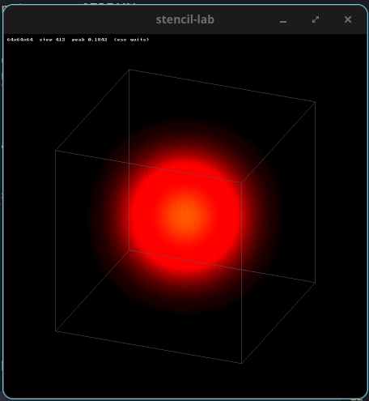

stencil-lab · HPC pivot, week 5
A 3D 7-point Jacobi stencil, built up level by level against the memory-bandwidth ceiling.
→ / space next · ← back · t theme
Part 1
Level 0 · naive
Each interior point becomes a weighted sum of itself and its six face neighbours. Two buffers, swapped every step; a one-cell halo holds the boundary.
x innermost: neighbours in i share cache lines8 FLOPs per point: 6 adds, 2 muls24 B per point: read, write, write-allocatefor (size_type k = 1; k <= nz; ++k) for (size_type j = 1; j <= ny; ++j) for (size_type i = 1; i <= nx; ++i) { const size_type c = index(i, j, k); const double sum = u[c - 1] + u[c + 1] + u[c - y_stride] + u[c + y_stride] + u[c - z_stride] + u[c + z_stride]; u_next[c] = center_weight * u[c] + r * sum; }std::swap(current, next);Tests
λᵀ, the discrete eigenvalue30×40×50, so a swapped stride can't hide behind a cube's symmetryHarness
bench prints one block to paste into the log: machine, the CPU it ran on, that CPU's caches, build, commit and results.
Median and p99, never the mean.
== stencil-lab bench ==cpu AMD Ryzen 9 9950X3D 16-Core Processor, 32 logicalran on cpu 27 -> cpu 27 (affinity: 32 cpus)caches L1d 48K L2 1024K L3 32768K (cpu 27)governor powersavecompiler GNU 16.0.1build RelWithDebInfo [-O2 -g -DNDEBUG] commit 8bdd63asolver L0 naivegrid 512x512x512, 10 steps x 10 repstime median 1.5150 s p99 1.5256 srate 7.09 GFLOP/s 21.26 GB/s (model)checksum 34778955.772421293Visual mode · SDL3
The same solver drives an SDL3 window: a hot cube spreads, then drains out through the cold faces.
bench
Part 2
Level 0 baseline · 512³ · pinned to cpu 27
Experiment · loop order
| Solver | Innermost axis | Median (s) | GFLOP/s | GB/s (model) | Δ time |
|---|---|---|---|---|---|
| L0 naive | x (stride 8 B) | 1.515 | 7.09 | 21.26 | — |
| L0 naive, bad loop | z (stride ≈ 2.1 MB) | 12.000 | 0.89 | 2.68 | +692% |
STREAM Triad · 1.6 GB arrays
| Threads | Placement | Triad (GB/s) |
|---|---|---|
| 1 | cpu 2, 96 MB L3 | 31.6 |
| 1 | cpu 27, 32 MB L3 | 31.3 |
| 8 | one CCD | 30.9 |
| 8 | split across CCDs | 30.6 |
| 16 | one per core | 30.2 |
| 32 | all SMT threads | 29.6 |
Roofline
42 GB/s ÷ 24 B per point ≈ 1.75 G updates/s ≈ 14 GFLOP/s. Past that, only fewer bytes per point helps.
Ryzen 9 9950X3D
| Logical CPUs | Physical cores | CCD | L3 |
|---|---|---|---|
| 0–7, 16–23 | 0–7 | CCD0, V-Cache | 96 MB |
| 8–15, 24–31 | 8–15 | CCD1 | 32 MB |
At 512³ both CCDs are DRAM-bound. For tiling, the cache a tile has to fit in depends on which CCD the thread runs on.
Part 3
Level 1 · single-thread optimization
j/k loops; sweep tile sizes on both CCDs__restrict__, then check on Godbolt whether the codegen changed-fopt-info-vec; explain every missEach change is logged with its speedup, % of STREAM, perf stat cache misses and roofline position.
After Level 1
About a day. On this desktop one thread already saturates DRAM, so expect the thread count to buy almost nothing, and show why.
On the LAN GPU box: naive kernel, then coalescing, then shared-memory tiling. Measured as a percentage of the card's peak bandwidth.